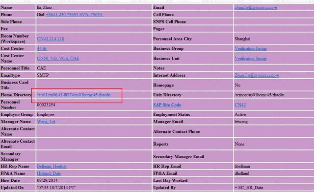

work
DONE server, login US and shanghai @Office
- State "DONE" from ""
this work is down, get mail from Lei Wang, access address
TODO apply for 50G space for project @Office
DONE login US server, see document @Office
- State "DONE" from "DOING"
there are a link between unix and window. first find it in look up. then access it - State "DOING" from "TODO"

[ ]PDF[X]extract PPT[ ]LAB
DONE find richard
- State "DONE" from "TODO"
revieved email - State "DOING" from "HANGUP(H!)|"
DONE find yuanpeng @Office
DONE know how to use CCT
send a mail, to CCT

TODO advanced training
DONE webx
- State "DONE" from "TODO"
apply for webx
TODO learning point
[ ]vedio basic[ ]vedio advaced
DONE token
- State "DONE" from "HANGUP"
know get token, stella are the owner - State "HANGUP" from "TODO"
: now send mail to CCT, waitint for replay
DOING see manule
- State "DOING" from "TODO"
TODO recieve a mail, wait for 10.6,
DONE set org mode
- State "DONE" from "TODO"
CANCELED set gnu mode
- State "CANCELED" from "TODO"
need more knowleage
DONE paied house rent
- State "DONE" from "TODO"
done
DONE learning how to use ctrix
- State "DONE" from "TODO"
it's done - open IE
- type int in address line
- then your'll see many server below the line
- US stands for server in US……

- sometimes you should change profile

DONE don't know how to access computing core in UNIX
- State "DONE" from "TODO"
try vgamdquad120/121/122
DONE know how to use agenda mode.
- State "DONE" from "TODO"
use the flowing setting
add this line to .emacs, let org know which file to scan
(setq org-agenda-files (list "~/org/work.org" ))
today is about training
new fire orientation
IT
facility
HR
toastmaster
now learning from richard
89** DONE fetch contract
- State "DONE" from "TODO"
get
HANGUP apply for 50G space
- State "HANGUP" from "TODO"
now ask yuanpeng, send cct